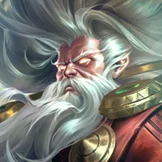

核心裝備
 和諧回音
和諧回音二技護盾能穩定觸發額外治療。
 熾灼魔器
熾灼魔器頻繁護盾隊友時提供攻速與附傷。
- 贖罪神石
團戰額外範圍治療，且可在死亡後使用。
 流水之杖
流水之杖給法術型隊友護盾時提供 AP 與技能加速。
 米凱的祝福
米凱的祝福敵方硬控多時保護核心。

Zilean · 雙炸彈控場／復活保核型輔助法師
極靈的核心不是單顆炸彈傷害，而是兩顆炸彈疊同一目標提前引爆並暈多人。大絕不要太早套在滿血前排，留給真正被集火的核心；三技可放自己腳下當防線，減慢敵方英雄與投射物。
本站評級理由：極靈在 ARAM 能用雙炸彈反覆打範圍暈眩，二技加速／護盾與三技減速投射物都很適合五人正面；但 7.2b 標準 ARAM 已被壓到 85% 傷害、110% 承傷，且大絕冷卻與一技傷害同步削弱，因此更偏功能型。
7.2b 明確標準 ARAM：傷害 100%→85%、承傷 100%→110%。同版本一技基礎傷害 70/140/210/280→60/125/190/255，大絕冷卻 100/85/70→110/95/80 秒。
二技護盾能穩定觸發額外治療。
頻繁護盾隊友時提供攻速與附傷。
團戰額外範圍治療，且可在死亡後使用。
給法術型隊友護盾時提供 AP 與技能加速。
敵方硬控多時保護核心。

技能加速是極靈最重要屬性。

需要更多法術續航時使用。

炸彈可消耗，二技又能穩定增厚護盾。

控制命中後讓隊友跟進獲得回復。

110% 承傷下需要降低第一輪爆發。

提高二技護盾與輔助裝治療效果。
進一步縮短技能循環。

補大絕救援距離與雙炸彈角度。
團隊低血時提供額外範圍續航。
1 技 > 2 技 > 3 技
主 1 提高炸彈控制與基礎傷害，次 2 強化護盾、跑速與技能加速；三技主要作防線，大絕能點就點。
存兩顆炸彈再找暈眩機會，單顆炸彈只在安全消耗時使用。二技先給最容易被切的隊友。
和諧回音後護盾價值很高。三技放在己方後排前方可同時減速敵人與投射物。
大絕是勝負手，優先給真正會被集火的主力。因 110% 承傷，不要站到前排只為了丟炸彈。
 蘇瑞亞的戰歌
蘇瑞亞的戰歌需要團隊加速開戰或撤退時使用。
 帝王命令
帝王命令隊伍需要更多進攻傷害時以控制觸發。
 大天使之杖
大天使之杖長局魔力壓力高時改成偏法師的續航方案。
看遊戲卡片下方分類 → 點相同分類 → 看左側 S+／S／A。
雙炸彈與加速減速都依賴短冷卻循環，技能加速價值非常高。
雙炸彈暈眩與減速能穩定限制敵人，控制增幅可直接放大保排。
二技能能提供護盾，護盾免控與護盾連動效果能直接提高核心生存。
加速減速是極靈的重要功能，跑速類能進一步強化整隊拉扯。
終極革新對復活大絕非常有價值，保命與技能強化單卡也很實用。
高頻雙炸彈需要魔力支撐，魔力類能降低長團斷檔。
v80.17.0 ARAM A 最終批：套用 7.2b 標準 ARAM 85% 傷害／110% 承傷，同步一技與大絕削弱。
ARAM 使用獨立於召喚峽谷的資料集；本站會把官方模式平衡、單線 5v5 特性與出裝／符文適配分開判斷，而不是直接複製峽谷配置。